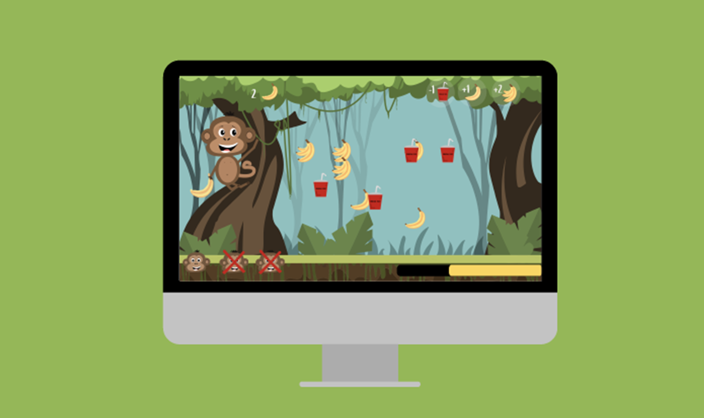
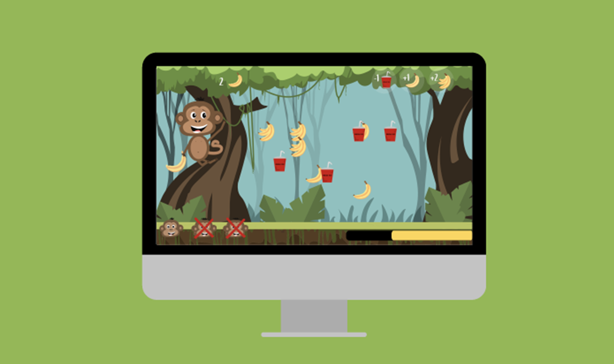

Dette var et 3 ugers langt forløb om grundlæggende UX, hvor vi havde til opgave, at designe og udtænke en content marketing løsning i form af en individuelopgave med henblik på en prototype og en gruppeopgave, hvor vi skulle lave en kea-app. I de følgende uger arbejdede vi meget med design og produktion af digitale indholdsløsninger til en diverse medieplatforme. Vi lærte først hvordan vi hentede data via dataindsamling. Her brugte vi både interview og observation, som vi senere brugte til udviklingen af vores prototyper.
’Design sprint’ var en gruppeopgave med henblik på at udvikle en kea-app med pronlemområdet ’Studielivet på KEA’. Vi havde en uge til at udarbejde i form af tværfaglige arbejdsprocesser i design og udviklingen af digitalt indhold med henblik på brugerforståelse. Min gruppe udviklede en skole app der havde til formål at samle alt der har med KEA at gøre i én app.
Lige fra afleveringer, projekter, kalender, skemaer, påmindelser, to-do lister til sociale arrangementer og nyheder om skolen. Målet var at gøre det nemmere for studerende, at få overblik og kommunikere med andre studerende og undervisere. Her arbejdede vi primært i XD, hvor vi udførte vores prototype. Vi brugte metoder som ’The Four-step sketch’, ’lightning demos’, Mapping, samt tests i vores idéprocess.
Se site
Dokumentation

 

Vores animationsspil ”Et billede i cyberspace” informerer mens det underholder unge i målgruppen 13-15 år. Spillet er baseret på et enkelt koncept om at klikke på ”del” og ”slet” elementer. Spillets formål er at formidle et budskab om at billeddeling af nøgenbilleder eller hævnporno blandt unge teenagere ikke er i orden, samt der er konsekvenser for både den der deler og sender billeder videre.
I denne opgave lærte vi hvordan vi i en gruppe kunne arbejde med idéprocessen. Det gjorde vi blandt andet ved at arbejde med storyboard, moodboard, persona og aktivitetsdiagram. Vi blev introduceret til Scrum og lærte hvordan vi kunne arbejde mest effektivt ved brug af Scrum-boards via trello.com. Deruover holdt vi en financering, hvor unge i alderen 13-15 år kom og prøvede vores spil.